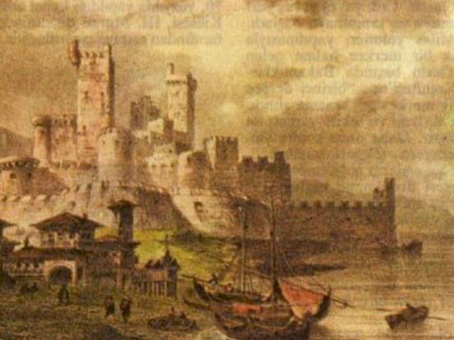

Kuşatma öncesi durum
1600 yılında Osmanlı ordusu, Avusturya ile yapılan savaşta Kanije Kalesi'ni ele geçirdi. Daha sonrasında kalenin komutanlığına Tiryaki Hasan Paşa getirildi. Kalede, 9000 civarındaki askeri kuvvete ek olarak cephane ve erzak da bırakan Osmanlı ordusu bölgeden ayrıldı. Bunun üzerine Avusturyalılar, 9 Eylül 1601'de Kanije Kalesi önlerine geldiler.
Kuşatmanın gelişimi
Avusturya ordusu 35.000 ila 100.000 arası asker ve 47 büyük topa sahipti. Orduda Avusturyalıların yanı sıra İtalya, İspanya, Malta ve
Papalık askerleri de vardı. Osmanlı Ordusu'nda ise 9000 asker ve küçük çaplı 100 civarında top bulunmaktaydı. Bunun yanında, az miktarda
cephane ve erzak bulunuyordu. Ayrıca kalenin tüm dış bağlantısı kesilmiş durumdaydı.
Tiryaki Hasan Paşa, çatışmadan önce sadece tüfek ile atış talimi yaptırmıştır. Haçlı Ordusu’nun komutanı Arşidük II. Ferdinand, Osmanlı
ordusunun topu olmadığını varsayarak saldırıya geçti. Osmanlı Ordusunun Haçlı Ordusunun saldırısına karşılık olarak bütün toplarını ateşlemesiyle
birlikte Haçlı Ordusu çok sayıda kayıplar vermiştir.
Verdiği kayıplardan sonra Haçlı Ordusu, daha sert bir şekilde saldırdı. Saldırılara karşı bir süre direnen Tiryaki Hasan Paşa düşmanın
psikolojisini bozarak geri çekilmeye zorlamaya karar verdi. Kalenin dışında ölen askerlerinin cebine gerçek dışı bilgiler içeren mektuplar koyulmuştur.
Bu mektuplarda genel olarak kalenin uzun bir süre daha dayanabilecek erzağının ve cephanesinin bulunduğu ve destek güçlerinin Belgrad yakınında
olduğuna dair bilgiler bulunuyordu.

Kuşatmanın ikinci ayına girildiğine kaledeki cephanenin büyük bir kısmı azalmış durumdaydı. Kalan erzağın ihtiyacı yeterince karşılamaması ve
kış mevsiminin yaklaşmasıyla birlikte kalenin savunması imkansız görünüyordu. Tiryaki Hasan Paşa başka bir plan uygulamaya karar verdi. Bu
plan ile birlikte gece baskını (huruç hücumu) yapmaya karar verildi.
Kuşatmanın 73. gecesi (18 Kasım 1601), Tiryaki Hasan Paşa ve kurmayları Haçlılara bir gece baskını düzenledi. Padişahtan beklenen yardımın geldiğini sanan Arşidük Ferdinand çok sayıdaki adamı ve muhafızları ile birlikte geri çekildi. Haçlı ordusu bu geri çekilme sonucunda geride 47 büyük top, 14.000 tüfek, 60.000 çadır, 15.000 kazma kürek, binlerce erzak ve Ferdinand'ın altın tahtını ve karargâh olarak kullandığı çadırını geride bırakmıştır. Kuşatma kesin Osmanlı zaferi ile sonuçlanmıştır.
Bibliyografi
- H. Ziya Ersever, (1986), Kanije savunması ve Tiryaki Hasan Paşa, Ankara: Genelkurmay Basımevi,
- Namık Kemal, (1993), Kanije ,İstanbul: Sebil Yayınevi, 1993, ISBN 975-7480-39-8.
- Kemal Erkan, (2008)Tiryaki Hasan Paşa ve Kanije Müdafaası İstanbul: Çamlıca Basım Yayın ISBN 9944-905-44-2. (Aslı: Târîh-i Tîr Hasan Paşa, Millet Kütüphanesi, Nr.: 187)
- M. Halistin Kukul, Kanije Destanı, , Türkiye Diyanet Vakfı, ISBN 975-389-082-6.
- Ali Osman Atak Kanije Zaferi , Damla Yayınevi, ISBN 978-975-381-320-4.
- Osmanlılar Albümü 2. Kitap, Akit
- Ufuk Seyar Tulpar Kanije Savunması, Cinius Yayınları, 2017 ISBN 6052960516
Kaynakça
- Wikipedia Kanije Müdaafası
- Austria in conflict with the Porte, The German Political Broadsheet, 1600-1700: Vol. I, 1600-1615, Ed. John Roger Paas, (MZ-Verlagsdruckerei GmbH, 1985),
51.
3 Ocak 2014 tarihinde Wayback Machine sitesinde arşivlendi.: "Archduke Ferdinand of Austria led an imperial army of 35,000 back to Nagykanizsa and laid siege to the fortress" - Prof. Yaşar Yüce-Prof. Ali Sevim: Türkiye tarihi Cilt III, AKDTYKTTK Yayınları, İstanbul, 1991 p 38-40
- Austria in conflict with the Porte, The German Political Broadsheet, 1600-1700: Vol. I, 1600-1615, ed. John Roger Paas, (MZ-Verlagsdruckerei GmbH, 1985),
51. 10 Mayıs
2014 tarihinde Wayback Machine sitesinde arşivlendi. - a b c "Kanije Savunması" (PDF). Milli Savunma Bakanlığı elektronik arşivi. 23 Eylül 2021 tarihinde kaynağından (PDF) arşivlendi. Erişim tarihi: 30 Haziran 2022.